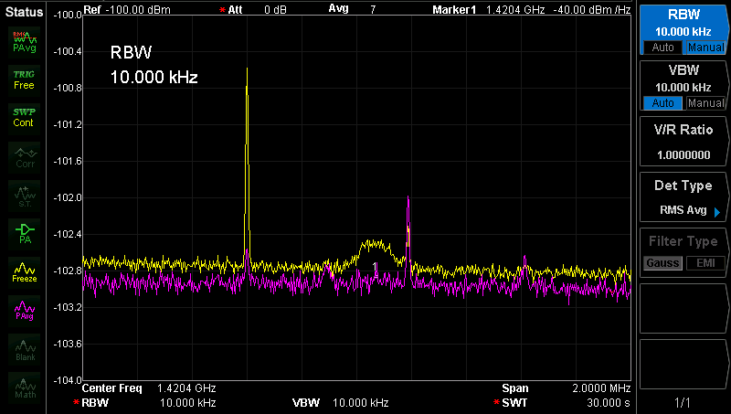
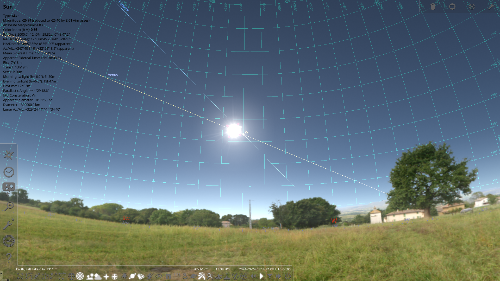

UI Elements & Style Guide
Reference guide for AstroKit buttons, tables, and layout components.
AstroKit Learning Modules
These are sample UI elements and components that will appear across the AstroKit LMS and observation tools.
Module List
- Module 1: Introduction to Radio Astronomy
- Module 2: Hydrogen Line Observations
- Module 3: Using the RTL-SDR
- Module 4: Sky Mapping Basics
- Module 5: Classroom Experiments
Action Buttons
Used for navigation and primary actions.
Open-Source Tools
| Name | Description | Type |
|---|---|---|
| Stellarium | Planetarium software showing accurate night sky. | Open-Source |
| NASA JOVE | Educational radio astronomy project. | Reference |
| Celestia | 3D astronomical visualization. | Open-Source |
| Total Tools Indexed | 3 | |
Module Previews (Grid System)

Hydrogen Line
Spectral analysis visualization.

Radio Sky Map
Real-time source tracking.

Stellarium
Optical overlay tools.